Каталог


Землеройная и дорожно-строительная техника
Стоимость указана за 1 час работы (НДС 22% включён). Доставка техники рассчитывается отдельно. Удалённость объекта учитывается путём добавления часов к работе техники (для колёсной техники).
Тягачи, полуприцепы
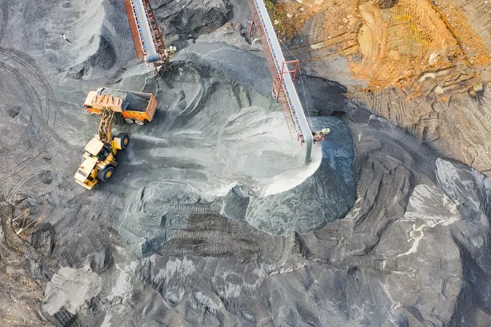
Тягач с КМУ (самогруз)
HOWO T5G
4 500 ₽/чмин. 8 ч
- Грузоподъёмность борта10 т
- Грузоподъёмность стрелы5 т
- ТипБортовой с КМУ
Самосвалы
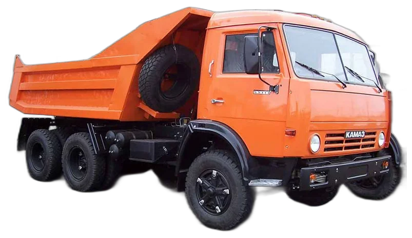
Самосвал
КАМАЗ 55111-15
3 000 ₽/чмин. 8 ч
- Грузоподъёмность13 т
- Объём кузова6,6 м³
- Колёсная формула6×4
- Тип разгрузкиЗадняя
Самосвал
SHACMAN SX3256DR384
3 500 ₽/чмин. 8 ч
- Грузоподъёмность25 т
- Колёсная формула6×4
- ДвигательWeichai, 336 л.с.
- КабинаF3000
Экскаваторы
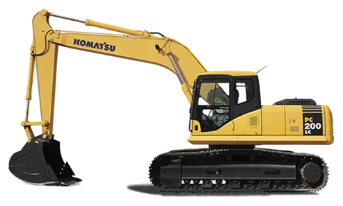
Экскаватор гусеничный
Komatsu PC200-8
6 000 ₽/чмин. 10 ч
- Общий вес19 400–21 460 кг
- Ковш0,6 м³
- Длинная рукоятьдо 16 м
- Топливный бак400 л
- Макс. глубина копания5380–6620 мм
- Высота выгрузки6630–7110 мм
- Сила тяги178 кН
- Высота копания9500–10 000 мм
Экскаватор-погрузчик
JCB 3CX
3 800 ₽/чмин. 8 ч
- Эксплуатационная мощность63 кВт
- Масса7 370 кг
- Ковш экскаватора0,3 м³, шир. 60 см
- Макс. глубина копания4,24 м
- Ковш фронтальный1 м³, шир. 2,23 м
- Грузоподъёмность фронт. ковша1 850 кг
- Макс. высота подъёма3,23 м
- Макс. скорость37 км/ч
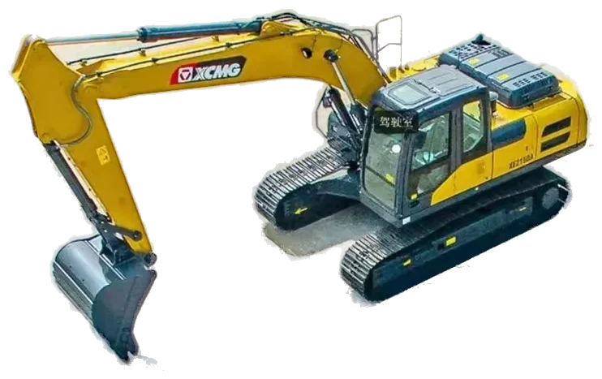
Экскаватор гусеничный
XCMG XE 180DN
4 500 ₽/чмин. 10 ч
- Рабочий вес18,1 т
- Объём ковша1 м³
- Мощность93 кВт
- Скорость передвижения5,6/3,0 км/ч
- Усилие копания ковша128 кН
- Макс. глубина копания6 000 мм
- Макс. высота копания8 927 мм
- Тяговое усилие162 кН
Погрузчики
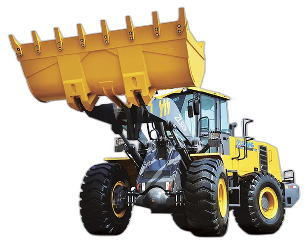
Фронтальный погрузчик
XCMG ZL50GN
4 200 ₽/чмин. 8 ч
- Грузоподъёмность5 000 кг
- Объём ковша3 м³
- Вес погрузчика17 500 кг
- Высота выгрузки (45°)3 100 мм
- Макс. высота подъёма5 580 мм
- Время полного цикла10,5 сек
- Топливный бак250 л
- Размеры (Д×Ш×В)7910×3016×3515 мм
Фронтальный погрузчик
XCMG LW330FN
3 800 ₽/чмин. 8 ч
- Номинальная нагрузка3 300 кг
- Объём ковша2 м³
- Мощность92 кВт
- Эксплуатационная масса10 800 кг
- Макс. усилие копания120 кН
- Габариты (Д×Ш×В)7470×2482×3320 мм
Минипогрузчик
LIUGONG CLG385B
3 000 ₽/чмин. 8 ч
- Объём ковша0,1 м³
- Навесное оборудованиеФреза
- Мощность61,3 кВт
- Эксплуатационная масса3 750 кг
- Грузоподъёмность1 045 кг
- Доставкарассчитывается отдельно
Автогрейдеры
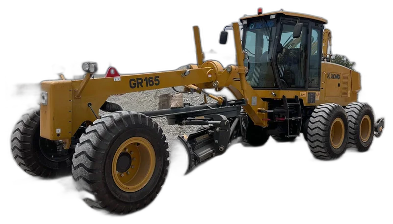
Автогрейдер
XCMG GR165
4 800 ₽/чмин. 10 ч
- Эксплуатационная масса15 000 кг
- Длина × Ширина × Высота8900×2625×3470 мм
- Размер отвала3965×610 мм
- Колёсная формула6×4 (3 оси)
- Передач вперёд/назад6 / 3
- Топливный бак280 л
- Макс. скорость38 км/ч
- Доставкарассчитывается отдельно
Асфальтоукладчики, фрезы
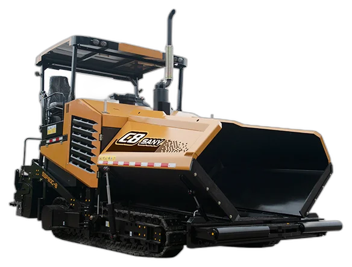
Асфальтоукладчик
SANY SSP80
10 000 ₽/чмин. 10 ч
- Ширина укладкидо 4,7 м
- Производительность800 т/ч
- Макс. толщина покрытия35 см
- Мощность двигателя153 кВт
- Режим нагреваЭлектрический
- Скорость движения0–2,5 км/ч
- Рабочая скорость1–23 м/мин
- Номинальная частота2050 об/мин
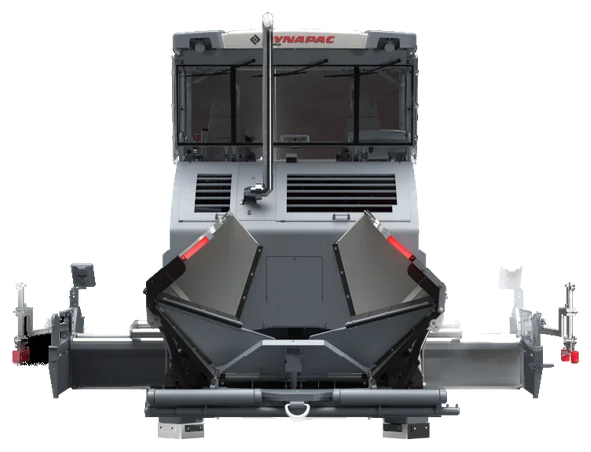
Асфальтоукладчик
Dynapac SD2500C
10 000 ₽/чмин. 10 ч
- Ширина укладкидо 5 м
- Макс. скорость укладки28 м/мин
- Транспортная скорость0–4 км/ч
- Электрическая система24 В
- Топливный бак350 л
- Тип транспортёраDual bar feeder
- Ширина конвейера2×655 мм
Фреза дорожная
WIRTGEN W150CFI
12 000 ₽/чмин. 10 ч
- Ширина фрезерования1,5 м
- Мощность двигателя380 л.с. (Cummins QSL9)
- Масса20 900 кг
- Диаметр барабана980 мм
- Конвейер первичный650 мм
- Конвейер выгрузочный600 мм
Катки
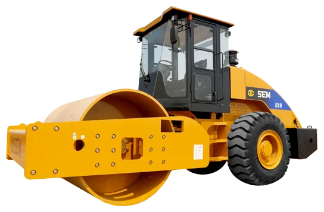
Каток грунтовый
Каток грунтовый
3 000 ₽/чмин. 10 ч
- ТипГрунтовый
- НазначениеУплотнение грунтового основания
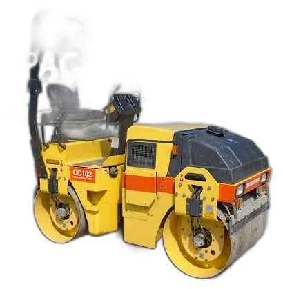
Каток вибрационный
DYNAPAC CC102
1 800 ₽/чмин. 10 ч
- Эксплуатационная масса3 т
- ТипТандемный вибрационный
- Количество вальцов2
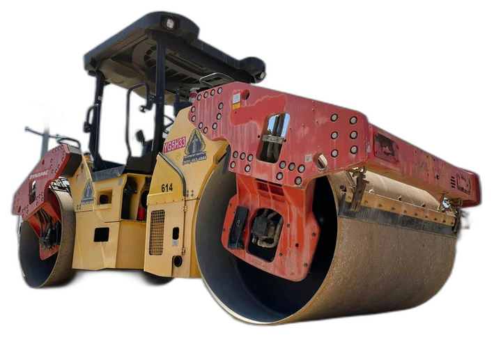
Каток вибрационный
DYNAPAC CC224HF
3 500 ₽/чмин. 10 ч
- Эксплуатационная масса8 т
- Ширина уплотняемой полосы1 500 мм
- Количество вальцов2
- Диаметр вальца1 150 мм
- Центробежная сила78 кН
- Частота вибрации48 Гц
- Габариты (Д×Ш×В)4490×1620×2990 мм
- Радиус поворота5 190 мм
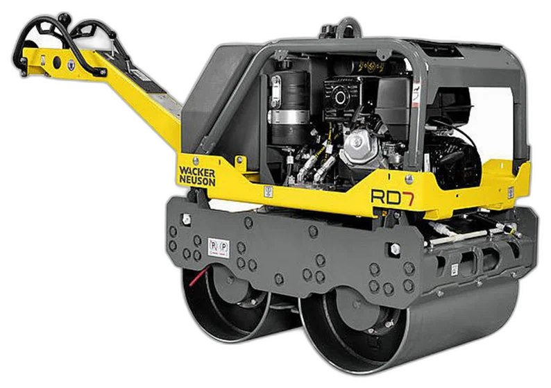
Каток комбинированный
DM-7,7 VC
3 500 ₽/чмин. 10 ч
- Эксплуатационная масса7,7 т
- ТипКомбинированный
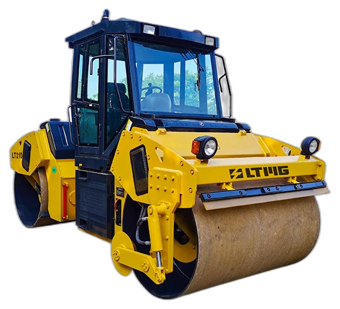
Каток вибрационный
DM-10 VD
3 800 ₽/чмин. 10 ч
- Эксплуатационная масса10 т
- ТипВибрационный
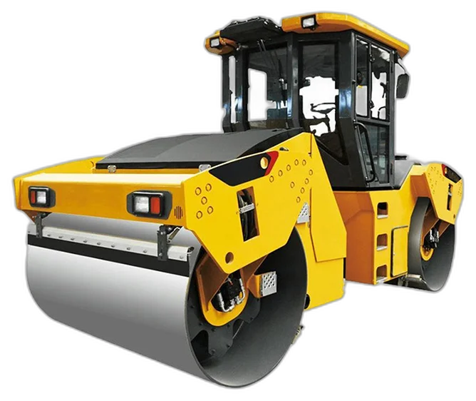
Каток вибрационный
DM-13 VD
4 200 ₽/чмин. 10 ч
- Эксплуатационная масса13 т
- ТипВибрационный
Спецтехника
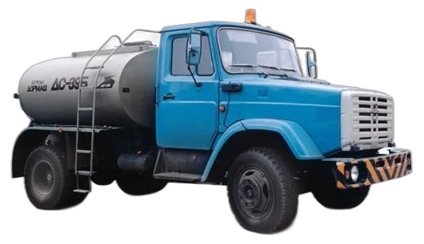
Гудронатор
ЗИЛ гудронатор
3 800 ₽/чмин. 8 ч
- ШассиЗИЛ
- НазначениеРозлив битумной эмульсии, подгрунтовка
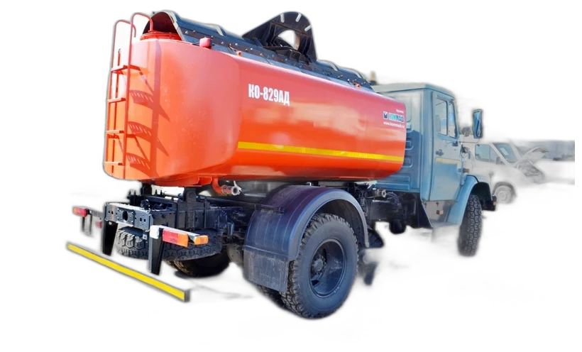
Водовоз / щётка
ЗИЛ водовоз/щётка
3 800 ₽/чмин. 8 ч
- ШассиЗИЛ
- НазначениеПодача воды, подметание территории
Щётка дорожная
ЗИЛ щётка
4 000 ₽/чмин. 8 ч
- ШассиЗИЛ
- НазначениеМеханизированное подметание дорог и площадок